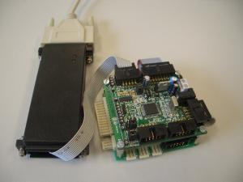
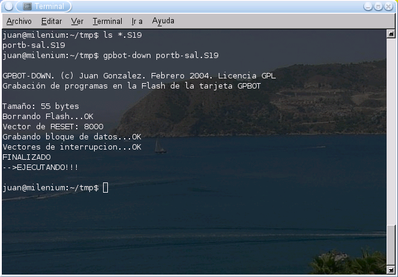

|
GPBOT-DOWN: Descarga de programas en la tarjeta GPBOT |
|
 |
|
En el curso 2003/2004 comencé a impartir el laboratorio de la asignatura de Robótica, en la EPS de la UAM. La placa microcontroladora que se emplea es la tarjeta GPBOT, diseñada por el profesor Guillermo González de Rivera, basada en el microcontrolador 68hc08 de Motorola. Todo el software estaba disponible para plataformas Windows. Lo primero que hice fue buscar herramientas para poder trabajar desde Linux. Como no encontré ningún programa para grabar, decidí hacerlo yo y publicarlo bajo una licencia GPL. Ahora los alumnos pueden utilizar la plataforma que prefieran, Linux o Windows, para realizar las prácticas.
Este programa se distribuye bajo licencia GPL. Se conceden permisos para copiarlo, modificarlo y/o redistribuir las modificaciones
|
Descarga de ficheros |
|
GPBOT-DOWN. Versión 0.1. Febrero 2004 |
Bajar el paquete gpbot-tools-0.1.tgz
Descomprimirlo
$ tar vzxf gpbot-tools-0.1.tgz
Instalación. Sólo hay que copiar el fichero gpbot-down (situado en gpbot-tools/gpbot-down/) a un directorio que se encuentre en el path. Por ejemplo en el /usr/bin. O si lo preferimos, desde alguno de nuestra cuenta.
El programa gpbot-down ya viene pre-compilado en el paquete gpbot-tools-0.1.tgz, por lo que para usarlo no es necesario compilarlo. Los pasos a seguir son:
Bajar el paquete gpbot-tools-0.1.tgz
Descomprimirlo
$ tar vzxf gpbot-tools-0.1.tgz
Compilar las librerías
$ cd gpbot-tools/gpbot-dev/src
$ make
Con esto se generan los ficheros .o necesarios. También se compila el programa gpbot-dev, que se usa para depurar las librerias de monitorización. Sólo tiene utilidad para desarrolladores.
Compilar el programa gpbot-down
$ cd ../../gpbot-down
$ make
Si todo ha ido bien, se nos habrá creado el programa gpbot-down
La descarga de programas en la gpbot es muy sencilla:
Conectar la gpbot al puerto serie del PC, a través del cable monitor
Alimentarla
Situarnos en el directorio donde se encuentre el fichero .S19 a descargar
Si el programa a descargar fuese ejemplo.S19, ejecutaríamos:
$ gpbot-down ejemplo.S19
Si todo ha ido bien, aparecerá lo siguiente:
GPBOT-DOWN. (c) Juan Gonzalez. Febrero 2004. Licencia GPL
Grabación de programas en la Flash de la tarjeta GPBOT
Tamaño: 49 bytes
Borrando Flash...OK
Vector de RESET: 8000
Grabando bloque de datos...OK
Vectores de interrupcion...OK
FINALIZADO
-->EJECUTANDO!!!
Por defecto se toma el COM1. Se puede especificar otro puerto de la siguiente manera:
$ gpbot-down ejemplo.S19 -com2
Aquí se puede ver un pantallazo:

Tarjeta GPBOT: Página oficial del sistema de desarrollo GPBOT.
Tarjeta GPBOT: Guía rápida de la tarjeta GPBOT. Ejemplos de programación en ensamblador y C.
Club de Robótica-Mecatrónica de la EPS UAM.
01/Junio/2004: Publicada página en la web